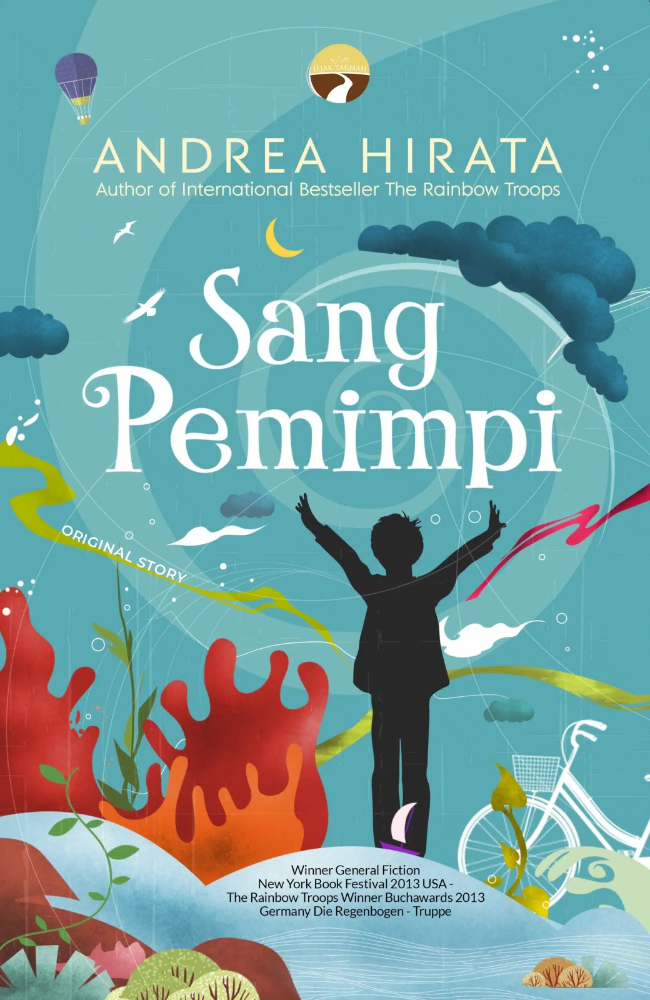

Book Collection
| Gambar | Detail Buku | Kutipan |
|---|---|---|
 |
Judul: Sang Pemimpi Penulis: Andrea Hirata Penerbit: Bentang Tahun: 2006 |
"Bermimpilah, karena Tuhan akan memeluk mimpi-mimpi itu." |
|
Judul: The Museum of Innocence Penulis: Orhan Pamuk Penerbit: Iltisim Yayinlari Tahun: 2008 |
"Apa pun yang orang lain katakan, hal yang terpenting dalam hidup adalah bersenang-senang." | |
|
Judul: Atomic Habits (Nonfiksi) Penulis: James Clear Penerbit: Avery Tahun: 2018 |
"Perubahan kecil yang konsisten menghasilkan hasil yang luar biasa." | |
 |
Judul: Rich Dad Poor Dad (Nonfiksi) Penulis: Robert T. Kiyosaki Penerbit: Warner Books Tahun: 1997 |
"Bukan seberapa banyak uang yang kamu hasilkan, tapi seberapa banyak yang kamu simpan." |
|
Judul: Anna Karenina Penulis: Leo Tolstoy Penerbit: Russkiy Vestnik Tahun: 1878 |
"If you look for perfection, you'll never be content." | |
|
Judul: Surat Kecil Untuk Tuhan Penulis: Agnes Davonar Penerbit: Nauli Medi Tahun: 2008 |
"Bukankah setiap manusia terlahir untuk memiliki kebahagiaannya masing-masing." |